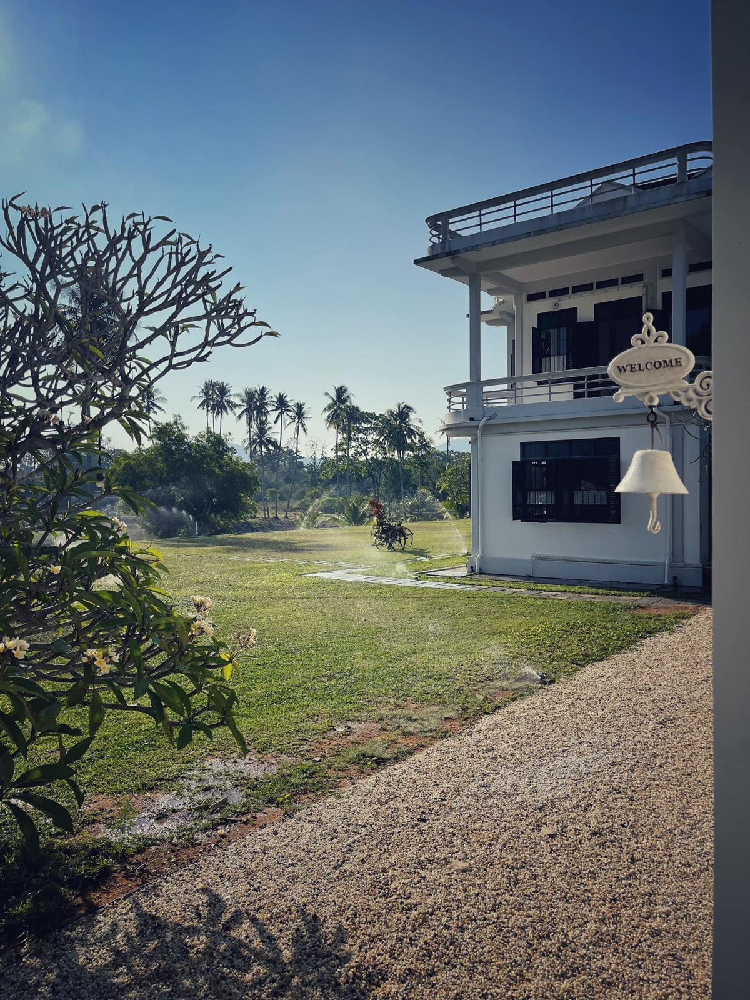
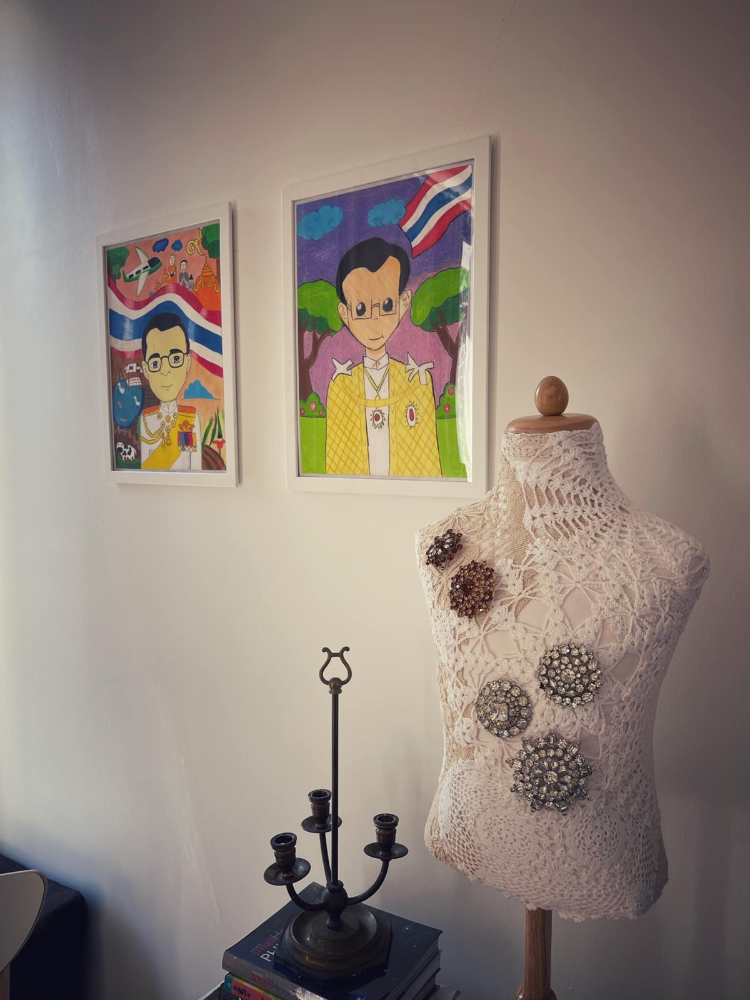
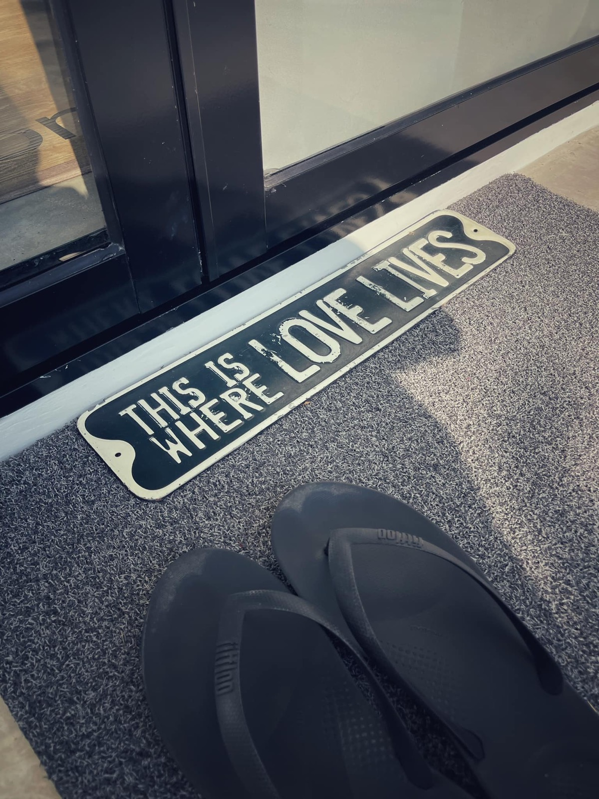
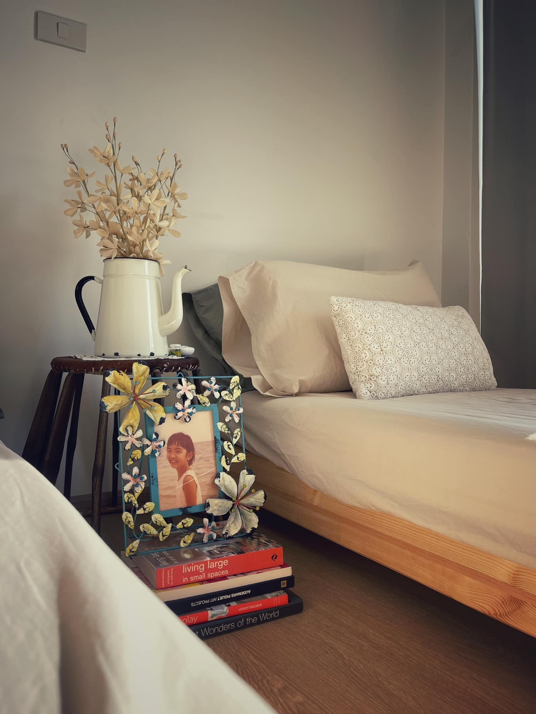
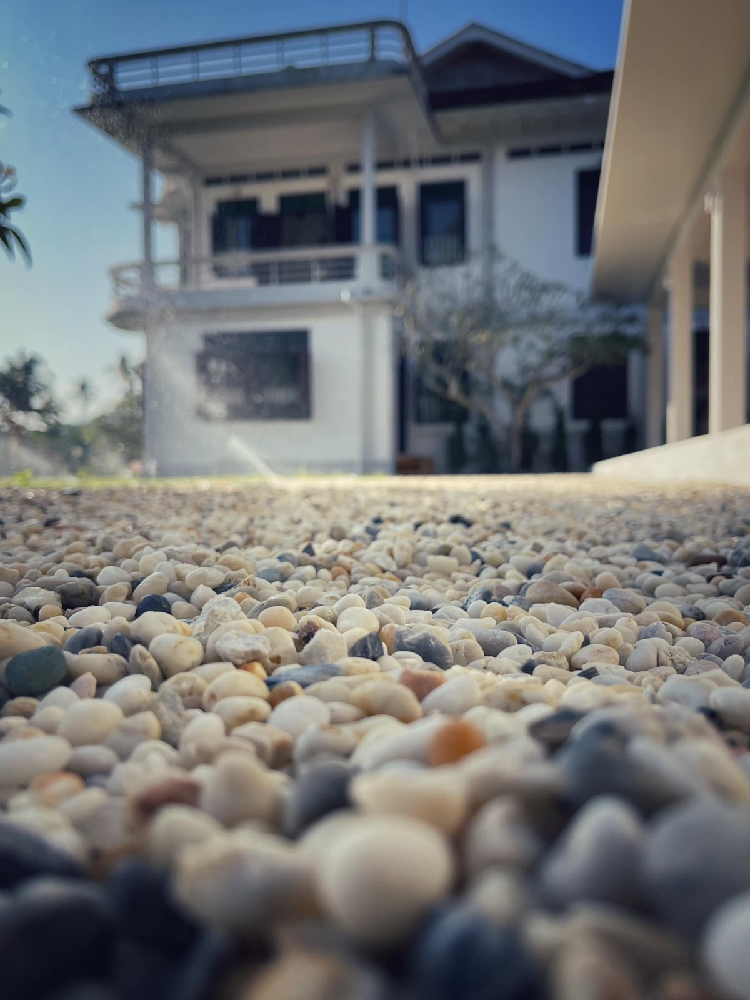

2567 · สังคม · เหตุการณ์
อาม่ากลับมานอนบ้านอาจ้อ ครั้งแรกในรอบ 45 ปี





กว่า 45 ปี แห่งความคิดถึง ❤️
แต่คืนเป็นคืนแรกที่อาม่าได้กลับมานอนแค่บ้านอาจ้อ กว่า 27 ปี เรือนหอแห่งความทรงจำของอาก๊องอาม่า 37 ปี ไม่มีคนอยู่อาศัย 8 ปีที่หลานกลับมาซ่อมพัฒนาบ้านอาจ้อให้เป็นของขวัญอาก๊อง ❤️
ชวนอาม่ามานอนบ้านอาจ้อหลายที แต่อาม่าบอกตลอด ห้องน้ำเดินลำบาก กลางค่ำกลางคืนเด๋วเปเลงก้าว มาวันนี้ฝันเป็นจริงแอ่ คิดว่าเราพอเอาตัวรอดได้ จี้เลยออกแบบสร้างบ้านจิ๋ว ห้องนอนจิ๋ว ห้องน้ำน่ารักๆ มีทีวีหนวยฮิด โหลดหนังไทยหนุกๆ ไว้ให้อาม่าแล เปิดเสียงฉาวซักฮิด อาม่าหูไม่ค่อยดีแอ่ หวันเย็นได้กินกับข้าวหรอยๆ ที่ครูกบทำ อยู่กับอามะบ้าง หลานบ้าง ลูกค้าเดินมาหาทักทายบ้าง พอตี 9 ปิดไคว เท้ยาวๆไป 🥰
บ้านหนวยจิ๋วๆ นี้ ยังเป็นความตั้งใจเพื่อเรื่องราวของชุมชน เด็กๆ ใครจะไปรู้ อนาคตอาจเปิดโอกาสที่เราไม่เคยเห็นได้พัฒนาต่อยอดอีกไม่รู้จบก็เป็นได้ ☀️
#ThisIsWhereLoveLives 💕
#บ้านอาจ้อ ❤️